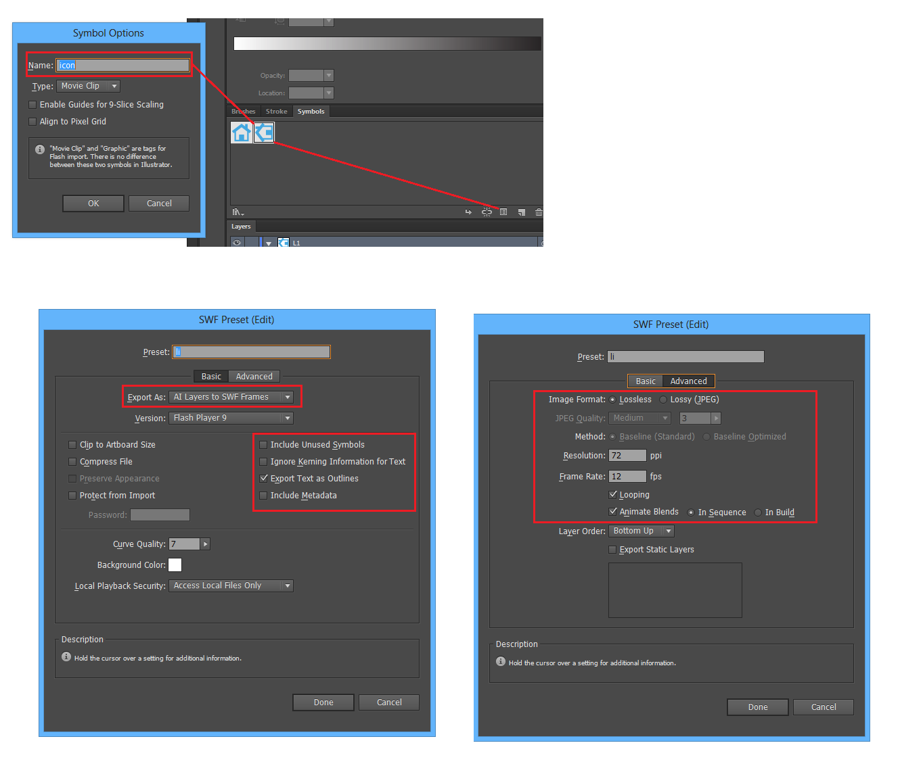
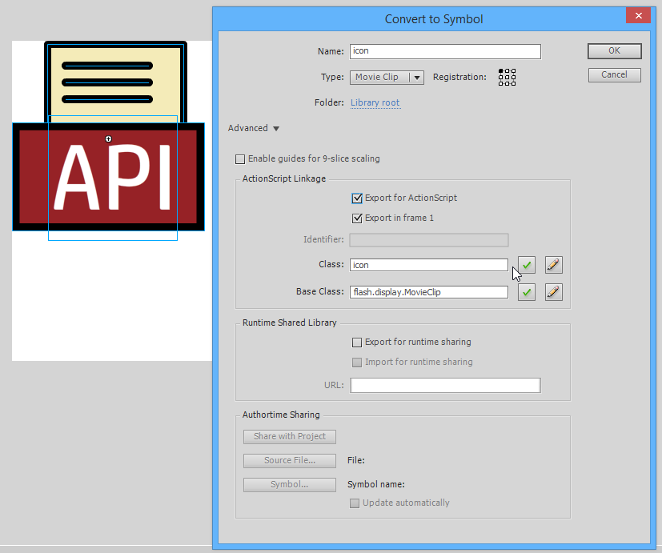
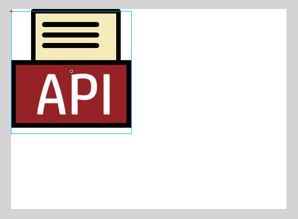
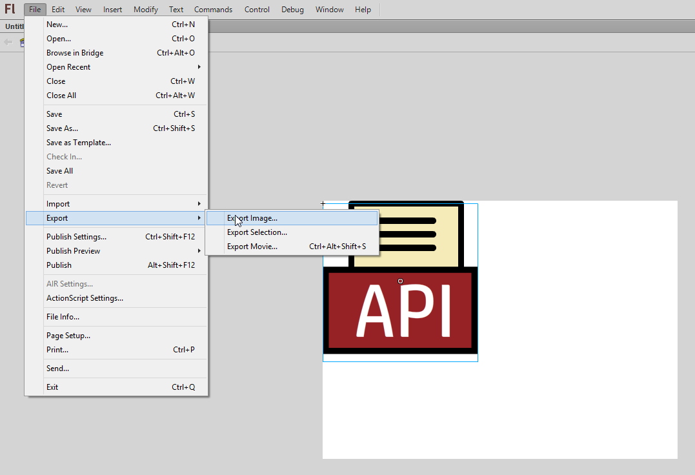

How to make swf image for Navigator of artifact icon
Create icon, export to swf following below image

Open the swf file above and following below image



Created with the Personal Edition of HelpNDoc: Easily create EPub books